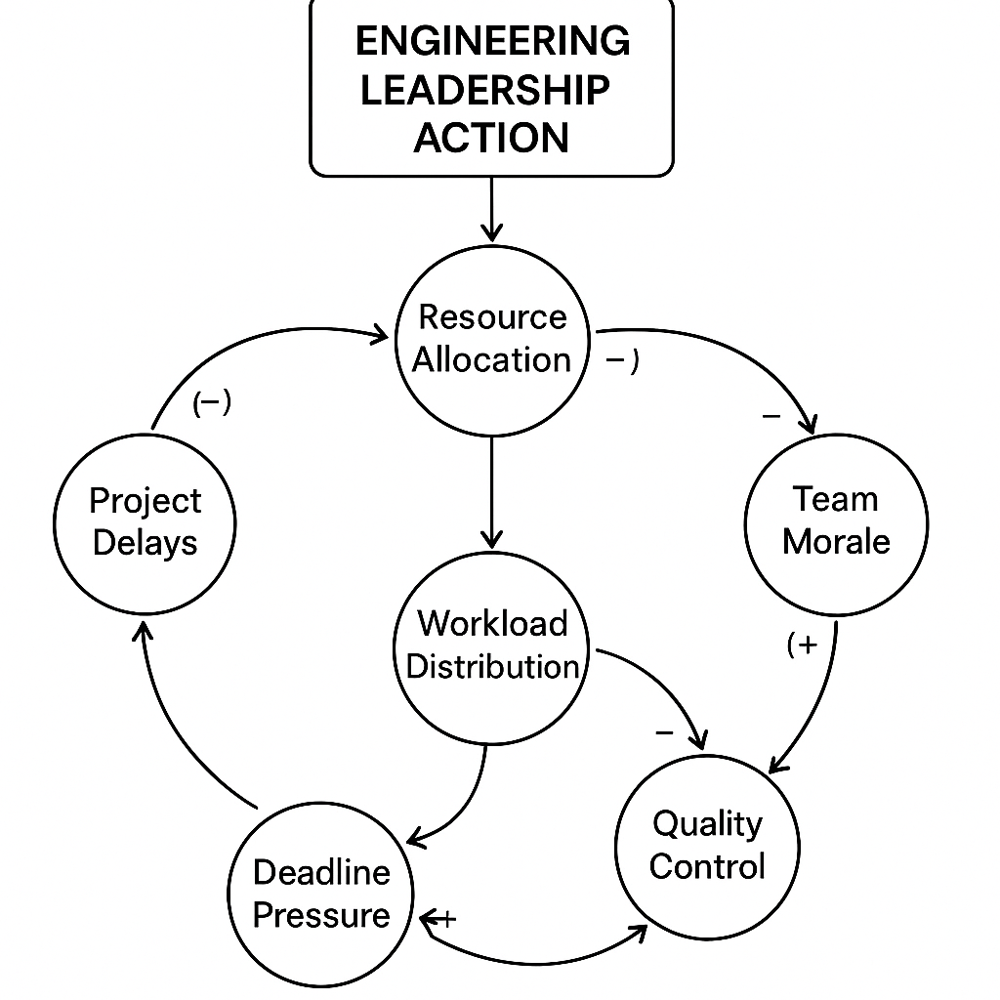
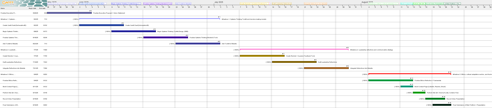

Career Goals & Vision
I dream of being an inclusive and values-driven engineering leader who values innovation, diversity, and continuous improvement. I aim to build high-performing teams that solve complex problems and create impactful solutions.
My mission is to lead with integrity, foster trust, and empower others to thrive through servant leadership.
Systems Thinking Toolkit
This section demonstrates my application of systems thinking to real-world leadership. It includes a causal loop diagram, a reflection on systems complexity, and a real-world example of engineering decision-making across system boundaries.
📈 Causal Loop Diagram
The diagram below illustrates how team morale and workload distribution interact through reinforcing and balancing feedback loops.

🧠 Systems Thinking Reflection
The diagram shows how overloading a team reduces morale, which then lowers productivity and causes further project delays—creating a reinforcing loop of burnout. Systems thinking is essential in such situations because it enables leaders to anticipate unintended consequences, manage interdependencies, and intervene strategically.
I would proactively model complex relationships in team dynamics and apply interventions that address root causes—like redistributing tasks or adjusting deadlines.
⚙️ Systems-Based Engineering Decision Example
Introducing a vibration test delayed production by 1.5 weeks but significantly reduced warranty claims. This trade-off demonstrates long-term thinking and highlights system-aware decision-making.
📅 Download Engineering Example (PDF)
Based on Senge’s systems thinking model (Senge, 2006).
Team Communication & Feedback
Effective engineering leadership relies on clear communication, respectful conflict resolution, and continuous feedback. This section presents my professional approach to communicating with teams, facilitating meetings, and guiding performance improvement.
🗣️ Leadership Communication Style Statement
As an engineering leader, my communication style is proactive, respectful, and adaptive. I deliver instructions through structured briefings, ensuring clarity and alignment with team objectives. I address conflicts calmly by listening actively, validating different perspectives, and promoting a collaborative solution. In multicultural teams, I adjust my tone, language, and delivery method to suit team members’ preferences and cultural contexts. I value feedback, transparency, and empathy to build trust and cohesion.
📅 Download Full Statement (PDF)
📋 Weekly Team Meeting Agenda Template
- Objective: Review project progress and address blockers.
- Duration: 30 minutes
- Agenda:
- 5 mins – Welcome & Meeting Objectives
- 10 mins – Status Updates (Team Members)
- 10 mins – Issues & Blockers
- 5 mins – Action Items & Next Steps
- Follow-Up Section: [Tasks Assigned | Deadlines | Owners]
📅 Download Meeting Agenda (PDF)
🗘️ Peer/Team Feedback Form
- Section 1: Communication Effectiveness
- Section 2: Team Support and Collaboration
- Section 3: Performance Evaluation
- Section 4: Suggestions for Improvement
- Section 5: Open-Ended Comments
📅 Download Feedback Form (PDF)
🎯 Performance Review Coaching Script
“Hi Alex, I appreciate the effort you’ve been putting into the recent sprint. I did want to touch base because I noticed some delays with your deliverables. I know you’ve been juggling a lot, and I’d like to understand what’s blocking your progress. My goal is to help you succeed — maybe we can break your task into smaller parts or realign the workload if needed. Let’s come up with a game plan together. Your contributions are valuable, and I’m confident we can get back on track.”
Project Timeline
This Gantt chart outlines the phases and milestones of my ELR Web Portfolio.

Ethics & Cultural Readiness
I am committed to ethical and inclusive leadership in engineering. Key practices include:
- ⚖️ Applying professional codes of ethics (e.g., NSPE)
- 🌍 Adapting to U.S. workplace culture while respecting global diversity
- 🧱 Decision-making guided by ethical frameworks
⚖️ Ethical Dilemma Response
Here you will find a detailed account of a leadership situation involving an ethical dilemma, along with my decision-making process for resolving it.
📅 Download Ethical Dilemma Response (PDF)
📜 Engineering Leadership Code of Ethics
These are the 5–7 core principles I commit to following as an engineering leader, each connected to specific workplace actions.
📅 Download Code of Ethics (PDF)
🌍 Cultural Adaptation Reflection
A personal reflection on my experience or expectations of adapting to the U.S. engineering work culture, comparing it with my background.
Career & Performance Strategy
🚀 Career Advancement Plan
90-Day Plan: In the first three months of a leadership role, I will conduct one-on-one meetings to learn team dynamics, review ongoing projects, and align expectations. I will initiate weekly retrospectives and adopt Agile ceremonies. Google's use of early feedback loops via post-mortems is a proven strategy (Schmidt & Rosenberg, 2014).
Skills and Certifications: I will pursue PMP and AWS Cloud certifications. PMP holders earn 22% higher salaries and show better project outcomes (PMI, 2023).
Mentorship & Growth: I will seek mentorship as done at Microsoft, where junior leaders engage in cross-functional coaching (HBR, 2021).
🧩 Self-Assessment & Reflection Form
- Strengths: Communication, empathy, accountability
- Improvement: Delegation, deep system knowledge
- Progress: 3/5 training modules complete, one roadmap session delivered
- Next Actions:
- Finish AWS certification
- Lead two retrospectives
- Present roadmap update
At Atlassian, self-reviews paired with 360-feedback boost performance tracking quarterly (Atlassian, 2022).
📋 Mock Performance Evaluation Template
| Criteria | Rating (1–5) | Comments |
|---|---|---|
| Communication | ||
| Collaboration | ||
| Problem-Solving | ||
| Delivery | ||
| Code Quality |
Suggestions:
- Weekly code review participation
- Shadow senior engineer
- Share monthly tech insights
- Use Jira for OKR tracking
Spotify evaluates juniors bi-monthly using their internal model focusing on clarity and impact (Spotify Labs, 2022).
📚 References
- Atlassian. (2022). Team Playbook. https://www.atlassian.com/team-playbook
- Goleman, D. (2006). Emotional Intelligence: Why It Can Matter More Than IQ. Bantam.
- Harvard Business Review. (2021). How Microsoft Develops its Leadership Pipeline. https://hbr.org
- PMI. (2023). Project Management Salary Survey. https://www.pmi.org
- Schmidt, E., & Rosenberg, J. (2014). How Google Works. Grand Central Publishing.
- Senge, P. M. (2006). The Fifth Discipline: The Art & Practice of The Learning Organization. Doubleday.
- Spotify Labs. (2022). Engineering Career Ladder. https://engineering.atspotify.com
- Thomas, K. W. (1992). Conflict and conflict management. In J. W. Newstrom & K. Davis (Eds.), Organizational Behavior. McGraw-Hill.
Contact & Résumé
📧 Email: youremail@example.com
🔗 LinkedIn: Visit my profile
📄 Résumé: Download PDF